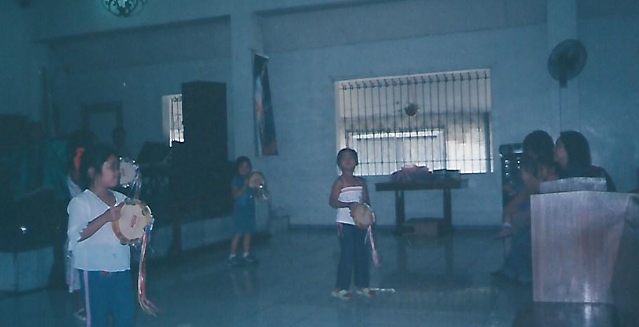
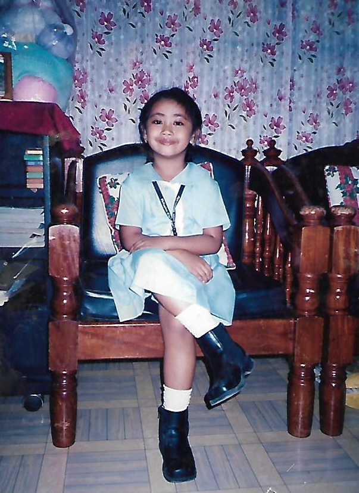

| |
|||
| |
|
|
|
|
About Neve Bonjour! |
|  |
I started learning to dance with tambourine when I was 7 years old and it was my best friend's mother who taught us. Up until now, I'm still doing the tambourine. Also, now that I kind of mastered the steps already, it's time for me to teach it to the future tambourine dancers of our church's Praise and Worship Team. |
| I studied at Philippine Christian Univeristy for my primary education. The school was just walking distance from my home, making it very convenient. Not only that, since my father works at the campus, I have a discount on my tuition fee. |
 |
I graduated high school at the same school, Philippine Christian University. The 4 years I spent in this school was indeed a roller coaster ride with lots of ups and downs. I have learned a lot all those years and there are many memories that I will cherish until the end. |

|
||||||||||
| |
| CONTACT |
LET'S GET SOCIAL! |
| |
| All Rights Reserved © 2017 Neve Velasquez |